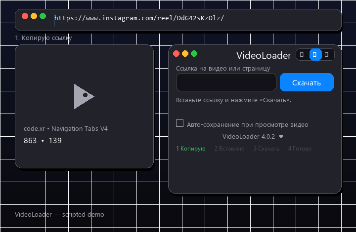

Для Windows · macOS · Linux
Бесплатное расширение с открытым кодом. YouTube, TikTok, Instagram — вставь ссылку, остальное само. Windows и macOS.
Всё для скачивания — и ничего лишнего.
Вставь ссылку на видео, пост или рилс. Расширение само находит цельный файл: помощник, вкладка, страница, Instagram API.
Фрагменты потока и битые куски отсекаются проверкой. Нет файла — скажет честно.
Смотришь видео — файл падает сам. Анимации и мелочь пропускаются.
Русский, English, Deutsch, 中文, қазақша, 한국어. Авто по языку браузера.
Последние 7 файлов: показать в папке, удалить с диска, очистить список.
yt-dlp на твоей машине с куками Chrome. Как сайты-качалки, но приватно.
Ссылка → «Скачать» → файл в загрузках.

Без регистрации и сборки.
chrome://extensions/ → включи тумблер.
«Загрузить распакованное» → папка videoloader.
Иконку на панель — и качай. Firefox: about:debugging → временное дополнение.
Коротко о главном.
Точно расширение: ставится в браузер за минуту, ничего не пишет в систему, удаляется в два клика на странице расширений.
Сайт отдаёт только фрагменты потока без цельного файла. Расширение не подсовывает мусор — включи авто-сохранение или попробуй другой пост.
Нет. Всё работает локально в браузере; помощник крутится на 127.0.0.1. Исходники открыты — проверь сам.
Локальный yt-dlp с куками твоего Chrome — достаёт то, что не берётся из страницы. Без него расширение работает по встроенной цепочке.
Минута установки — и любой рилс твой.